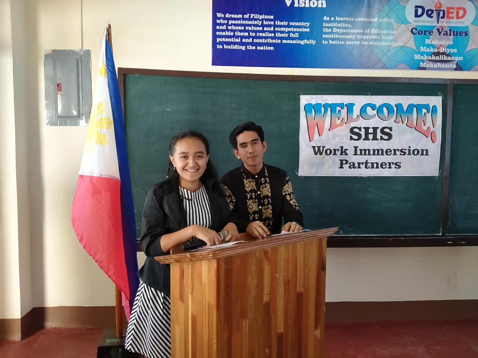
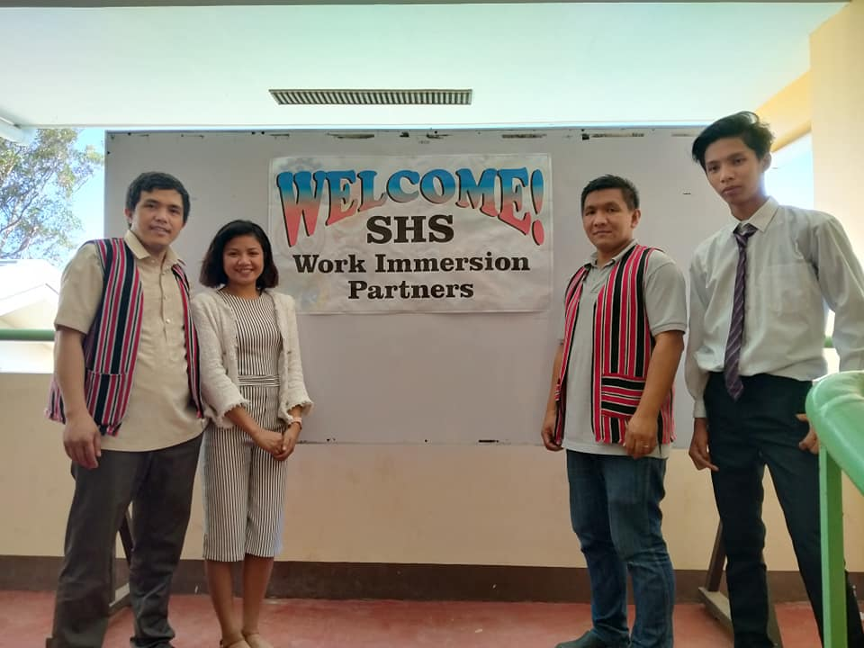

HUMMS
The Humanities and Social Sciences strand
After you take this strand, you can pursue college degrees such as or related to the following:
•Bachelor of Arts in Communication
•Bachelor of Elementary Education
•Bachelor of Secondary Education
•Bachelor of Arts in Journalism
•Bachelor of Arts in Broadcast Journalism
•Bachelor of Arts major in Social Studies

Rodel Bilog
Sir Bilog, is one of the Humms teacher he used to be guidance counselor and the coach of the basketball team of Mil-an.

Graduates of the HUMMS
This are the students who graduated in Humms they are the second batch students of Mil-an. They are the students of Sir Bilog.

Immersion Partners

Humms First Batch
